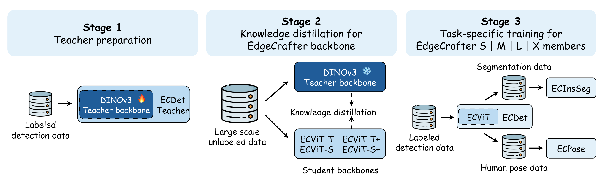
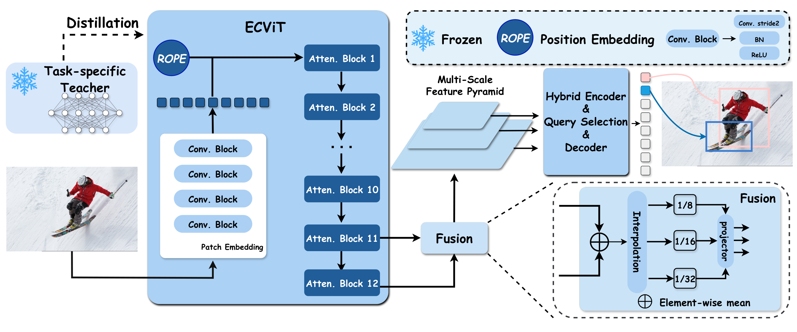

Transactions on Machine Learning Research (TMLR) 2026
Compare EdgeCrafter with representative real-time baselines. Change the efficiency axis, focus a model scale, or inspect any point for its exact benchmark values.
Deploying high performance dense prediction models on resource-constrained edge devices remains challenging due to strict limits on computation and memory. In practice, lightweight systems for object detection, instance segmentation, and pose estimation are still dominated by CNN-based architectures such as YOLO, while compact Vision Transformers (ViTs) often struggle to achieve similarly strong accuracy–efficiency trade-offs, even with large scale pretraining. We argue that this gap is largely due to insufficient task-specific representation learning in small-scale ViTs, rather than an inherent mismatch between ViTs and edge dense prediction. To address this issue, we introduce EdgeCrafter, a unified compact ViT framework for edge dense prediction centered on ECDet, a detection model built from a distilled compact backbone and an edge-friendly encoder–decoder design. We first adapt a large DINOv3-pretrained ViT to object detection and use it as a task-specialized teacher to distill rich representations into compact student backbones on ImageNet-1K and COCO images. We further improve efficiency by replacing standard patch embedding with a lightweight convolutional stem and constructing multi-scale features with simple interpolation and linear projection instead of costly feature pyramids. The resulting detection-distilled representation transfers directly to instance segmentation and human pose estimation through lightweight task-specific prediction modules. Using no task annotations beyond COCO, ECDet-S reaches 51.7 box AP with fewer than 10M parameters, while ECInsSeg-X and ECPose-X reach 48.4 mask AP and 74.8 keypoint AP. As a complementary but more compute-intensive setting, Objects365 detection pretraining consistently improves all scales, with the X variants reaching 59.9 box AP, 49.8 mask AP, and 75.9 keypoint AP. These results show that compact ViTs, when paired with task-specialized distillation and edge-aware design, can be a practical and competitive option for edge dense prediction.
Supports object detection, instance segmentation, and human pose estimation seamlessly.
Superior accuracy-to-parameter ratio across multiple challenging vision tasks.
Architectural design for practical, real-world applications.


Explore the complete camera-ready benchmark tables by task, model scale, supervision, and metric.
Box AP on COCO val2017 · S scale · all supervision settings
| Scale | Detection | Pose | Segmentation |
|---|---|---|---|
| S | 51.7 / 53.6 | 68.9 / 69.7 | 43.0 / 43.9 |
| M | 54.3 / 56.7 | 72.4 / 73.1 | 45.2 / 46.9 |
| L | 57.0 / 59.0 | 73.5 / 74.5 | 47.1 / 48.8 |
| X | 57.9 / 59.9 | 74.8 / 75.9 | 48.4 / 49.8 |
Each cell reports COCO-only AP / Objects365 AP.
Latency is measured on an NVIDIA T4 with batch size 1 under FP16 using TensorRT 10.6. Methodology and protocol details.
If you find our work useful, please consider citing:
@article{liu2026edgecrafter,
title={EdgeCrafter: Compact ViTs for Edge Dense Prediction via Task-Specialized Distillation},
author={Liu, Longfei and Hou, Yongjie and Li, Yang and Wang, Qirui and Sha, Youyang and Yu, Yongjun and Wang, Yinzhi and Ru, Peizhe and Yu, Xuanlong and Shen, Xi},
journal={Transactions on Machine Learning Research},
year={2026}
}